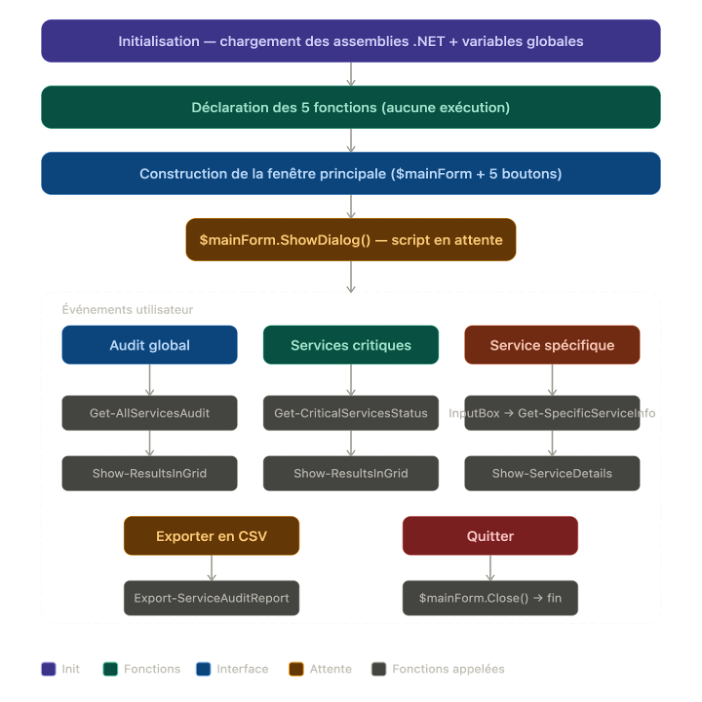

Scripting PowerShell - Développement d'un outil d'audit des services Windows

Prérequis

Ducumentation en ligne : https://cubdocumentation.sioplc.fr
Adressage
| Puissance de 2 | Valeur |
|---|---|
| 2⁰ | 1 |
| 2¹ | 2 |
| 2² | 4 |
| 2³ | 8 |
| 2⁴ | 16 |
| 2⁵ | 32 |
| 2⁶ | 64 |
| 2⁷ | 128 |
Adresse réseau : 192.168.6.0/24
| Service | Nombre d’hôtes | Adresse réseau | Masque de sous-réseau | Adresse de diffusion | Description VLAN |
|---|---|---|---|---|---|
| Production | 120 | 192.168.6.0 | 255.255.255.128 | 192.168.6.127 | VLAN 56 |
| Client 1 | 32 | 192.168.6.128 | 255.255.255.192 | 192.168.6.191 | VLAN 10 |
| Administration systèmes et réseaux | 6 | 192.168.6.192 | 255.255.255.240 | 192.168.6.207 | VLAN 20 |
N°1 sous-réseau Production = 126 hôtes → 2⁷ → /25
Production = 192.168.6.0/24 → 255.255.255.128 → x.x.x.1000 0000
Diffusion : 1100 0000 . 1010 1000 . 0000 0110 . 0111 1111
➡️ 192.168.6.127
Schéma logique – Agence Frankfur

Packet tracert - Agence Frankfurt

Plan de câblage

La structure du script
Le script est organisé en trois blocs distincts :
Initialisation — Les trois Add-Type chargent les bibliothèques .NET nécessaires à l'interface graphique, suivis de la déclaration des deux variables globales qui servent de mémoire partagée entre les fonctions.
Déclaration des fonctions — Cinq fonctions sont définies avant toute exécution, ce qui est indispensable en PowerShell : une fonction doit être déclarée avant d'être appelée. Elles couvrent deux responsabilités bien séparées :
- La logique métier (
Get-*) : collecter et traiter les données sur les services - L'affichage (
Show-*etExport-*) : présenter ou exporter ces données
Interface principale — La création de la fenêtre $mainForm et de ses cinq boutons constitue le point d'entrée utilisateur. C'est ici que tout démarre concrètement à l'exécution.
Le rôle des différentes fonctions
Get-AllServicesAudit interroge WMI via Get-CimInstance pour récupérer tous les services Windows (nom, état, mode de démarrage, nom affiché). Elle sauvegarde systématiquement les résultats dans $Global:LastAuditResults afin de les rendre disponibles pour l'export CSV ultérieur.
Get-CriticalServicesStatus parcourt la liste prédéfinie $Global:CriticalServices et vérifie l'état de chacun via Get-Service. Elle enrichit chaque résultat d'un booléen IsRunning qui sera exploité pour la colorisation dans la grille.
Get-SpecificServiceInfo combine deux sources pour un service ciblé : Get-Service pour les informations de base (statut, type de démarrage) et Get-CimInstance pour les détails avancés (chemin de l'exécutable, compte de service, description).
Export-ServiceAuditReport exporte le contenu de $Global:LastAuditResults dans un fichier CSV horodaté sur le Bureau de l'utilisateur, avec une proposition d'ouverture immédiate du fichier.
Show-ResultsInGrid crée une fenêtre DataGridView pour afficher une liste de services sous forme de tableau colorisé. Elle fonctionne dans deux modes selon le paramètre $isCritical : colorisation sur la colonne IsRunning pour les services critiques, ou sur la colonne State pour l'audit global.
Show-ServiceDetails génère dynamiquement un formulaire avec des paires label/champ pour afficher toutes les propriétés d'un service spécifique. Elle utilise une boucle sur deux tableaux parallèles pour construire les contrôles à la volée.
L'ordre d'exécution

Analyse critique du script avec au moins une proposition d'amélioration
Point fort : la séparation claire entre logique métier (fonctions Get-*) et affichage (fonctions Show-*) est une bonne pratique.
Limite à noter : la colorisation dans Show-ResultsInGrid se fait sur $grid.Rows juste après avoir défini DataSource, mais le DataGridView n'est pas encore rendu à ce moment-là — les lignes peuvent être vides. Une meilleure approche serait d'utiliser l'événement CellFormatting ou DataBindingComplete.
Sécurité : le filtre CIM "Name='$serviceName'" dans Get-SpecificServiceInfo est vulnérable à une injection si le nom vient d'une saisie utilisateur. Il vaudrait mieux valider ou échapper le nom avant de l'injecter dans la requête.
Proposition d'amélioration : corriger la colorisation avec Add_DataBindingComplete. C'est l'amélioration la plus impactante car elle corrige un bug silencieux qui rend une fonctionnalité entière inopérante. Il faut remplacer la boucle de colorisation par un gestionnaire d'événement déclenché une fois que le DataGridView a fini de charger ses données.
Script complet — ServiceAuditTool.ps1
# Script PowerShell d'audit des services Windows avec interface graphique
# ─────────────────────────────────────────────
# CHARGEMENT DES ASSEMBLIES .NET
# Nécessaires pour construire l'interface graphique Windows Forms
# ─────────────────────────────────────────────
Add-Type -AssemblyName System.Windows.Forms # Fenêtres, boutons, grilles, boîtes de dialogue
Add-Type -AssemblyName System.Drawing # Couleurs, polices, tailles, coordonnées
Add-Type -AssemblyName Microsoft.VisualBasic # InputBox (boîte de saisie simple)
# ─────────────────────────────────────────────
# VARIABLES GLOBALES
# ─────────────────────────────────────────────
$Global:LastAuditResults = @() # Stocke les résultats du dernier audit global (utilisés pour l'export CSV)
$Global:CriticalServices = @("DHCP", "DNS", "Spooler", "LanmanServer", "W32Time")
# Liste des services jugés critiques à surveiller :
# DHCP → Attribution automatique des adresses IP
# DNS → Résolution des noms de domaine
# Spooler → Gestionnaire d'impression
# LanmanServer → Partage de fichiers/imprimantes (SMB)
# W32Time → Synchronisation de l'horloge système
# ─────────────────────────────────────────────
# FONCTION : Get-AllServicesAudit
# Récupère la liste complète de tous les services Windows via WMI/CIM
# Retourne : tableau de services avec Nom, État, Mode de démarrage, Nom affiché
# ─────────────────────────────────────────────
function Get-AllServicesAudit {
try {
# Get-CimInstance est la méthode moderne recommandée (remplace Get-WmiObject)
$services = Get-CimInstance -ClassName Win32_Service | Select-Object Name, State, StartMode, DisplayName
$Global:LastAuditResults = $services # Sauvegarde pour l'export CSV ultérieur
return $services
} catch {
# Affiche une boîte d'erreur si la requête CIM échoue (droits insuffisants, etc.)
[System.Windows.Forms.MessageBox]::Show("Erreur: $($_.Exception.Message)", "Erreur", "OK", "Error")
return @() # Retourne un tableau vide pour éviter les erreurs en aval
}
}
# ─────────────────────────────────────────────
# FONCTION : Get-CriticalServicesStatus
# Vérifie l'état de chaque service de la liste $Global:CriticalServices
# Retourne : tableau d'objets personnalisés avec statut et indicateur booléen IsRunning
# ─────────────────────────────────────────────
function Get-CriticalServicesStatus {
$results = @()
foreach ($serviceName in $Global:CriticalServices) {
try {
# -ErrorAction SilentlyContinue : ne lève pas d'exception si le service est introuvable
$service = Get-Service -Name $serviceName -ErrorAction SilentlyContinue
if ($service) {
$results += [PSCustomObject]@{
Service = $serviceName
Status = $service.Status # Running, Stopped, Paused...
StartType = $service.StartType # Automatic, Manual, Disabled
IsRunning = ($service.Status -eq "Running") # Booléen pour la colorisation
}
} else {
# Le service n'existe pas sur cette machine
$results += [PSCustomObject]@{Service = $serviceName; Status = "Non trouvé"; StartType = "N/A"; IsRunning = $false}
}
} catch {
# Erreur inattendue lors de la lecture du service
$results += [PSCustomObject]@{Service = $serviceName; Status = "Erreur"; StartType = "N/A"; IsRunning = $false}
}
}
return $results
}
# ─────────────────────────────────────────────
# FONCTION : Get-SpecificServiceInfo
# Récupère les informations détaillées d'un service par son nom technique
# Combine Get-Service (infos de base) et Get-CimInstance (infos avancées)
# Retourne : objet personnalisé ou $null si introuvable
# ─────────────────────────────────────────────
function Get-SpecificServiceInfo($serviceName) {
try {
if ([string]::IsNullOrWhiteSpace($serviceName)) { return $null } # Garde-fou : nom vide
$service = Get-Service -Name $serviceName -ErrorAction Stop # Lève une exception si absent
$cimService = Get-CimInstance -ClassName Win32_Service -Filter "Name='$serviceName'"
return [PSCustomObject]@{
Name = $service.Name
DisplayName = $service.DisplayName
Status = $service.Status
StartType = $service.StartType
PathName = $cimService.PathName # Chemin complet de l'exécutable du service
StartName = $cimService.StartName # Compte Windows sous lequel tourne le service
Description = $cimService.Description
}
} catch { return $null } # Retourne $null si le service est introuvable
}
# ─────────────────────────────────────────────
# FONCTION : Export-ServiceAuditReport
# Exporte les résultats du dernier audit global en fichier CSV horodaté sur le Bureau
# ─────────────────────────────────────────────
function Export-ServiceAuditReport {
if ($Global:LastAuditResults.Count -eq 0) {
# Aucun audit n'a encore été effectué → on informe l'utilisateur
[System.Windows.Forms.MessageBox]::Show("Aucune donnée à exporter.", "Aucune donnée", "OK", "Warning")
return
}
# Horodatage pour garantir un nom de fichier unique
$timestamp = Get-Date -Format "yyyyMMdd_HHmmss"
$filePath = "$env:USERPROFILE\Desktop\ServiceAudit_Report_$timestamp.csv"
# -NoTypeInformation : supprime la ligne de type PowerShell en tête du CSV
# -Encoding UTF8 : assure la compatibilité des caractères accentués
$Global:LastAuditResults | Export-Csv -Path $filePath -NoTypeInformation -Encoding UTF8
# Demande à l'utilisateur s'il souhaite ouvrir le fichier
$result = [System.Windows.Forms.MessageBox]::Show(
"Rapport généré!`n$filePath`nVoulez-vous ouvrir le fichier?",
"Export réussi", "YesNo", "Information"
)
if ($result -eq "Yes") { Invoke-Item $filePath } # Ouvre le CSV avec l'application par défaut
}
# ─────────────────────────────────────────────
# FONCTION : Show-ResultsInGrid
# Affiche une liste de services dans une fenêtre DataGridView avec colorisation conditionnelle
# ─────────────────────────────────────────────
function Show-ResultsInGrid($title, $data, $isCritical = $false) {
$form = New-Object System.Windows.Forms.Form
$form.Text = $title
$form.Size = New-Object System.Drawing.Size(800, 600)
$form.StartPosition = "CenterScreen"
# DataGridView : tableau interactif en lecture seule
$grid = New-Object System.Windows.Forms.DataGridView
$grid.Size = New-Object System.Drawing.Size(760, 480)
$grid.Location = New-Object System.Drawing.Point(20, 20)
$grid.AutoSizeColumnsMode = "Fill"
$grid.ReadOnly = $true
$grid.DataSource = [System.Collections.ArrayList]$data
# Colorisation des lignes selon le statut du service
foreach ($row in $grid.Rows) {
if ($isCritical) {
# Mode critique : vert si running, rouge si arrêté
$row.DefaultCellStyle.BackColor = if ($row.Cells["IsRunning"].Value -eq $false) {
[System.Drawing.Color]::LightCoral # Rouge clair → service arrêté
} else {
[System.Drawing.Color]::LightGreen # Vert clair → service actif
}
} else {
# Mode audit global : colorisation selon la valeur de la colonne "State"
$status = $row.Cells["State"].Value
$row.DefaultCellStyle.BackColor = switch ($status) {
"Stopped" { [System.Drawing.Color]::LightCoral } # Rouge → arrêté
"Running" { [System.Drawing.Color]::LightGreen } # Vert → actif
default { [System.Drawing.Color]::LightYellow } # Jaune → état intermédiaire
}
}
}
$closeButton = New-Object System.Windows.Forms.Button
$closeButton.Text = "Fermer"
$closeButton.Size = New-Object System.Drawing.Size(100, 30)
$closeButton.Location = New-Object System.Drawing.Point(350, 520)
$closeButton.Add_Click({ $form.Close() })
$form.Controls.AddRange(@($grid, $closeButton))
$form.ShowDialog()
}
# ─────────────────────────────────────────────
# FONCTION : Show-ServiceDetails
# Affiche les informations détaillées d'un service dans une fenêtre formulaire
# ─────────────────────────────────────────────
function Show-ServiceDetails($serviceInfo) {
if (-not $serviceInfo) {
[System.Windows.Forms.MessageBox]::Show("Service non trouvé.", "Service introuvable", "OK", "Warning")
return
}
$form = New-Object System.Windows.Forms.Form
$form.Text = "Détails: $($serviceInfo.Name)"
$form.Size = New-Object System.Drawing.Size(600, 400)
$form.StartPosition = "CenterScreen"
# Tableaux parallèles : libellés affichés et propriétés correspondantes
$labels = @("Nom:", "Affichage:", "Statut:", "Démarrage:", "Chemin:", "Compte:", "Description:")
$properties = @("Name", "DisplayName", "Status", "StartType", "PathName", "StartName", "Description")
$y = 20
for ($i = 0; $i -lt $labels.Count; $i++) {
$label = New-Object System.Windows.Forms.Label
$label.Text = $labels[$i]
$label.Size = New-Object System.Drawing.Size(100, 20)
$label.Location = New-Object System.Drawing.Point(20, $y)
$label.Font = New-Object System.Drawing.Font("Arial", 9, "Bold")
$textBox = New-Object System.Windows.Forms.TextBox
$textBox.Size = New-Object System.Drawing.Size(450, 20)
$textBox.Location = New-Object System.Drawing.Point(120, $y)
$textBox.Text = $serviceInfo.($properties[$i])
$textBox.ReadOnly = $true
# Colorisation du champ Statut uniquement
if ($properties[$i] -eq "Status") {
$textBox.BackColor = if ($serviceInfo.Status -eq "Running") {
[System.Drawing.Color]::LightGreen
} else {
[System.Drawing.Color]::LightCoral
}
}
$form.Controls.AddRange(@($label, $textBox))
$y += 35
}
$closeButton = New-Object System.Windows.Forms.Button
$closeButton.Text = "Fermer"
$closeButton.Size = New-Object System.Drawing.Size(100, 30)
$closeButton.Location = New-Object System.Drawing.Point(250, $y + 10)
$closeButton.Add_Click({ $form.Close() })
$form.Controls.Add($closeButton)
$form.ShowDialog()
}
# ═════════════════════════════════════════════════════════════════
# INTERFACE PRINCIPALE
# ═════════════════════════════════════════════════════════════════
$mainForm = New-Object System.Windows.Forms.Form
$mainForm.Text = "AUDIT DES SERVICES WINDOWS"
$mainForm.Size = New-Object System.Drawing.Size(500, 400)
$mainForm.StartPosition = "CenterScreen"
$mainForm.FormBorderStyle = "FixedDialog" # Fenêtre fixe (non redimensionnable)
$mainForm.MaximizeBox = $false
# Titre visuel en haut de la fenêtre
$titleLabel = New-Object System.Windows.Forms.Label
$titleLabel.Text = "AUDIT DES SERVICES WINDOWS"
$titleLabel.Size = New-Object System.Drawing.Size(450, 30)
$titleLabel.Location = New-Object System.Drawing.Point(25, 20)
$titleLabel.Font = New-Object System.Drawing.Font("Arial", 14, "Bold")
$titleLabel.ForeColor = [System.Drawing.Color]::DarkBlue
# BOUTON 1 : Audit global
$auditAllButton = New-Object System.Windows.Forms.Button
$auditAllButton.Text = "Audit global des services"
$auditAllButton.Size = New-Object System.Drawing.Size(400, 40)
$auditAllButton.Location = New-Object System.Drawing.Point(50, 70)
$auditAllButton.BackColor = [System.Drawing.Color]::LightBlue
$auditAllButton.Add_Click({
$results = Get-AllServicesAudit
if ($results.Count -gt 0) { Show-ResultsInGrid "Audit global" $results }
})
# BOUTON 2 : Services critiques
$criticalButton = New-Object System.Windows.Forms.Button
$criticalButton.Text = "Services critiques"
$criticalButton.Size = New-Object System.Drawing.Size(400, 40)
$criticalButton.Location = New-Object System.Drawing.Point(50, 120)
$criticalButton.BackColor = [System.Drawing.Color]::LightYellow
$criticalButton.Add_Click({
$results = Get-CriticalServicesStatus
Show-ResultsInGrid "Services critiques" $results $true
})
# BOUTON 3 : Service spécifique
$specificButton = New-Object System.Windows.Forms.Button
$specificButton.Text = "Service spécifique"
$specificButton.Size = New-Object System.Drawing.Size(400, 40)
$specificButton.Location = New-Object System.Drawing.Point(50, 170)
$specificButton.BackColor = [System.Drawing.Color]::LightGreen
$specificButton.Add_Click({
$serviceName = [Microsoft.VisualBasic.Interaction]::InputBox("Nom du service:", "Service spécifique", "")
if ($serviceName) {
$serviceInfo = Get-SpecificServiceInfo $serviceName
Show-ServiceDetails $serviceInfo
}
})
# BOUTON 4 : Export CSV
$exportButton = New-Object System.Windows.Forms.Button
$exportButton.Text = "Exporter en CSV"
$exportButton.Size = New-Object System.Drawing.Size(400, 40)
$exportButton.Location = New-Object System.Drawing.Point(50, 220)
$exportButton.BackColor = [System.Drawing.Color]::LightCoral
$exportButton.Add_Click({ Export-ServiceAuditReport })
# BOUTON 5 : Quitter
$quitButton = New-Object System.Windows.Forms.Button
$quitButton.Text = "Quitter"
$quitButton.Size = New-Object System.Drawing.Size(100, 30)
$quitButton.Location = New-Object System.Drawing.Point(200, 280)
$quitButton.Add_Click({ $mainForm.Close() })
# Ajout de tous les contrôles à la fenêtre principale, puis affichage
$mainForm.Controls.AddRange(@($titleLabel, $auditAllButton, $criticalButton, $specificButton, $exportButton, $quitButton))
$mainForm.ShowDialog()